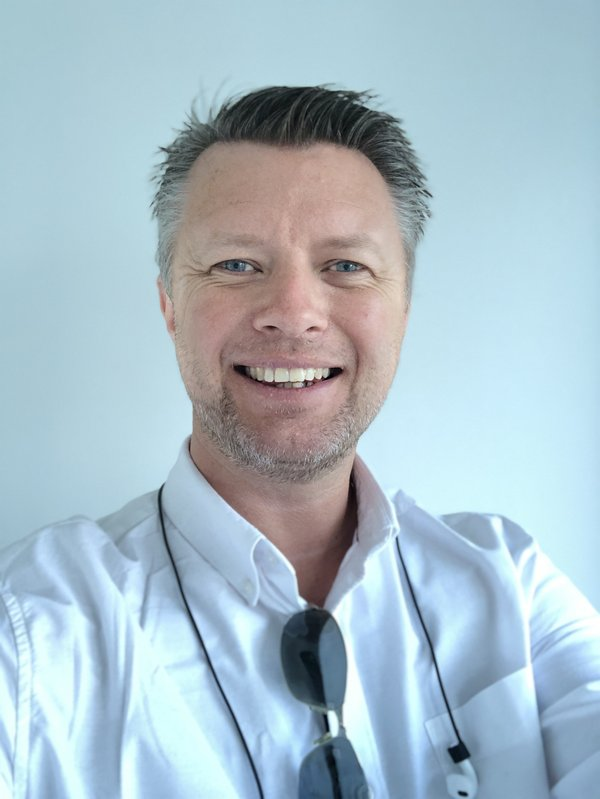

Professional
Finance Director.
AI Strategist.
The numbers of the past.
The technology of the future.
I'm Jimi Reed FCA — a Finance Director and Business Finance Partner at Aura Technology, based in Basingstoke. My work sits at the intersection of sharp financial thinking and the kind of commercial instinct that actually moves businesses forward. I focus on creating and protecting shareholder wealth: building the financial foundations that let companies grow with confidence, and the strategic clarity to know when to push and when to hold.
Being FCA qualified means I bring more than spreadsheets to the table. It means rigour, accountability, and a professional standard that doesn't waver when things get complicated. Finance is often where the real story of a business lives — and I've spent my career learning how to read it, and more importantly, how to act on it.
More recently, my work has expanded into the AI space — not as a passenger watching technology happen, but as someone actively engaged in how it reshapes businesses, decisions, and entire industries. The question that interests me most isn't what AI can do in theory — it's what it should do in practice.
AI Growth Alliance
Promoting responsible AI adoption across Hampshire & the Solent
I'm a member of the AI Growth Alliance — a Hampshire-based working group focused on the progressive and ethical adoption of AI across the region. The Alliance brings together businesses, leaders, and practitioners to share knowledge, challenge assumptions, and ensure the AI transition in Hampshire is both ambitious and responsible.
BEYOND THE OFFICE
Motorsport
A lifelong love of racing, circuits, and going fast
Motorsport has been part of my life since watching races as a child with my father. That early passion never left. I've been to Silverstone multiple times, experienced the madness of Le Mans, the elegance of Goodwood, and the raw noise of Thruxton and banger circuits. I also own my own kit car — because apparently watching isn't quite enough.
Read the F1 blog →Food
Cooking seriously, eating enthusiastically
I'm a self-confessed foodie — as my waistline will confirm. But the love of eating is matched by a genuine love of cooking. I recently added a Thermomix to the kitchen, which has taken things up a level. Whether it's a carefully constructed recipe or something improvised from the fridge, food is one of the great pleasures. Restaurants, markets, home cooking — all of it counts.
See the recipes →Travel
New cultures, new food, new perspectives
Travel is about more than places — it's about the food you eat, the people you meet, and the way a different context shifts how you see things. I'm equally happy on a proper fly-and-flop holiday as I am on a multi-centre touring trip working through a list of places and restaurants. The common thread is always curiosity.
Explore the trips →Art
Watercolours, acrylics, and the joy of making something
I paint. Watercolours and acrylics mostly. I won't pretend I'm particularly good at it — but that's not really the point. There's something valuable about a pursuit that exists purely for the making of it, with no commercial logic or professional outcome attached. It keeps the other parts of the brain alive.
See the work →